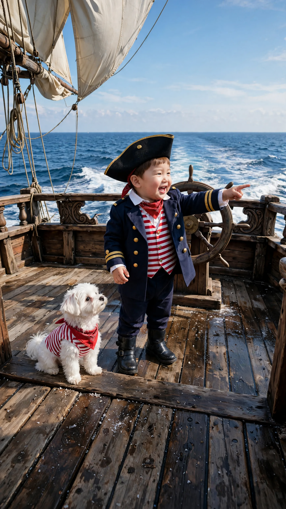
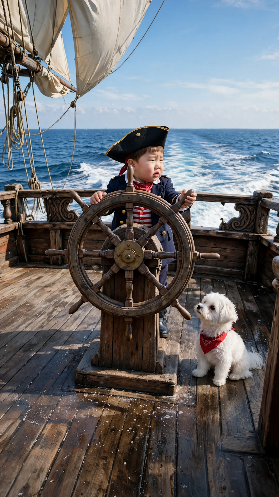
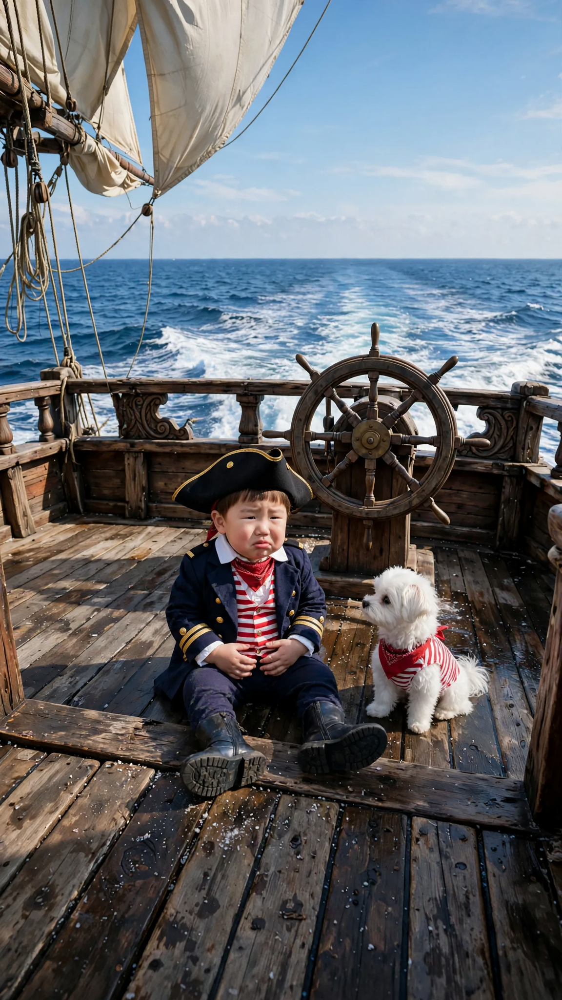

🎬 해적 선장 도윤
3컷 · 22초 · 🟦 표시 컷은 도윤이 입 다묾 · 실패하면 같은 걸로 2~3번 다시 걸기
1번 컷
⏱ 8초도윤: 「야~ 바다다~ 콩이야 우리 해적이야 알았지?」


[Character Action & Continuity] Realistic Korean slice-of-life short video clip. the stern deck of a wooden pirate ship at sea in Korea. Maintain exact appearance from start frame: a 24-month-old Korean toddler boy wearing a small navy captain's coat with shiny gold buttons over a white shirt, dark pants, little black boots and a black tricorn pirate hat; Kongi wears a small red bandana and a red-and-white striped vest. Scale: a small 24-month-old toddler build with natural proportions. Fixed positions: The wheel faces the camera mid-deck; Doyoon's place is behind it. [0-5s] Doyoon points at the sea, looks at Kongi and says his line right away [5-8s] Kongi gives one short happy bark as if answering yes [Dialogue Script & Emotion] 도윤 (단독 발화, 0초부터 바로): (신나서 큰소리치듯) "야~ 바다다~ 콩이야 우리 해적이야 알았지?" [Audio & Voice Specifications] Single Voice Track Only: Definite 18 to 24-month-old Korean INFANT TODDLER boy voice. Low-pitched, cute, raspy little boy toddler voice. Strictly NOT a school-age child, NOT female. Sound Format: Solo toddler voice in a quiet room. Background Sound: Quiet indoor room tone. Continuous steady indoor room air. [Technical Directives] 카메라: 갑판 위 도윤이와 콩이, 뒤로 바다가 보이는 미디엄 샷. 카메라 고정. 화면: 도윤이와 방만 보인다. 벽과 가구 표면은 무늬 없이 비어 있다. 도윤이 입모양 100% 완벽 립싱크.
2번 컷
⏱ 8초도윤: 「콩이야 배 운전할 줄 알아? 도윤이는 할 줄 몰라.」


[Character Action & Continuity] Realistic Korean slice-of-life short video clip. the stern deck of a wooden pirate ship at sea in Korea. Maintain exact appearance from start frame: a 24-month-old Korean toddler boy wearing a small navy captain's coat with shiny gold buttons over a white shirt, dark pants, little black boots and a black tricorn pirate hat; Kongi wears a small red bandana and a red-and-white striped vest. Scale: a small 24-month-old toddler build with natural proportions. Fixed positions: The wheel faces the camera mid-deck; Doyoon's place is behind it. [0-5s] Doyoon holds the wheel, looks at Kongi and asks his line right away, worried [5-8s] Kongi tilts its head, puzzled, and Doyoon blinks at the wheel [Dialogue Script & Emotion] 도윤 (단독 발화, 0초부터 바로): (난감하다는 듯 솔직하게) "콩이야 배 운전할 줄 알아? 도유니는 할 줄 몰라." [Audio & Voice Specifications] Single Voice Track Only: Definite 18 to 24-month-old Korean INFANT TODDLER boy voice. Low-pitched, cute, raspy little boy toddler voice. Strictly NOT a school-age child, NOT female. Sound Format: Solo toddler voice in a quiet room. Background Sound: Quiet indoor room tone. Continuous steady indoor room air. [Technical Directives] 카메라: 키를 잡은 도윤이 얼굴이 보이는 미디엄 샷. 카메라 고정. 화면: 도윤이와 방만 보인다. 벽과 가구 표면은 무늬 없이 비어 있다. 도윤이 입모양 100% 완벽 립싱크.
3번 컷
⏱ 6초도윤: 「도윤이 멀미해서 못 하겠어. 집에 갈래.」


[Character Action & Continuity] Realistic Korean slice-of-life short video clip. the stern deck of a wooden pirate ship at sea in Korea. Maintain exact appearance from start frame: a 24-month-old Korean toddler boy wearing a small navy captain's coat with shiny gold buttons over a white shirt, dark pants, little black boots and a black tricorn pirate hat; Kongi wears a small red bandana and a red-and-white striped vest. Scale: a small 24-month-old toddler build with natural proportions. Fixed positions: The wheel faces the camera mid-deck; Doyoon's place is behind it. [0-4s] Doyoon looks at the camera and says his line right away in a droopy, whiny voice [4-6s] Doyoon slumps his shoulders and sighs; Kongi leans on him [Dialogue Script & Emotion] 도윤 (단독 발화, 0초부터 바로): (기운 빠져 칭얼거리듯) "도유니 멀미해서 못 하겠떠. 집에 갈래." [Audio & Voice Specifications] Single Voice Track Only: Definite 18 to 24-month-old Korean INFANT TODDLER boy voice. Low-pitched, cute, raspy little boy toddler voice. Strictly NOT a school-age child, NOT female. Sound Format: Solo toddler voice in a quiet room. Background Sound: Quiet indoor room tone. Continuous steady indoor room air. [Technical Directives] 카메라: 갑판에 주저앉은 도윤이 얼굴이 보이는 미디엄 샷. 카메라 고정. 화면: 도윤이와 방만 보인다. 벽과 가구 표면은 무늬 없이 비어 있다. 도윤이 입모양 100% 완벽 립싱크.